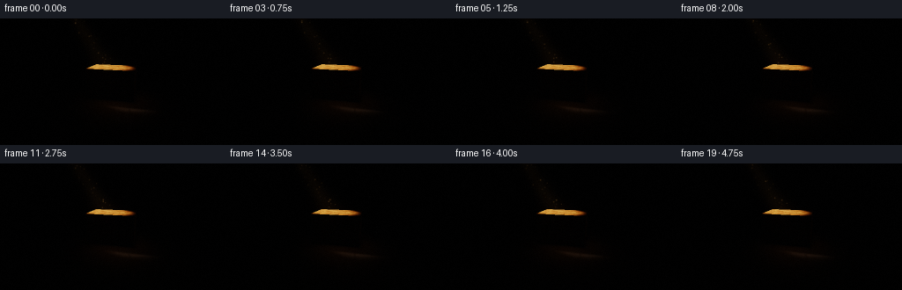
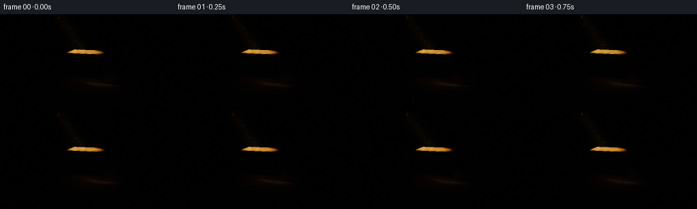
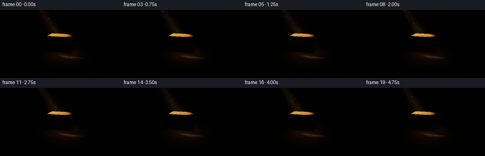
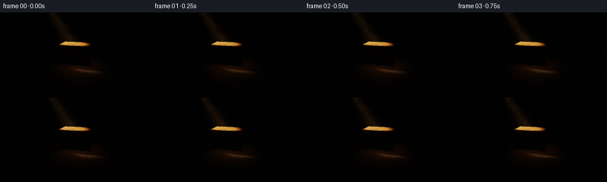
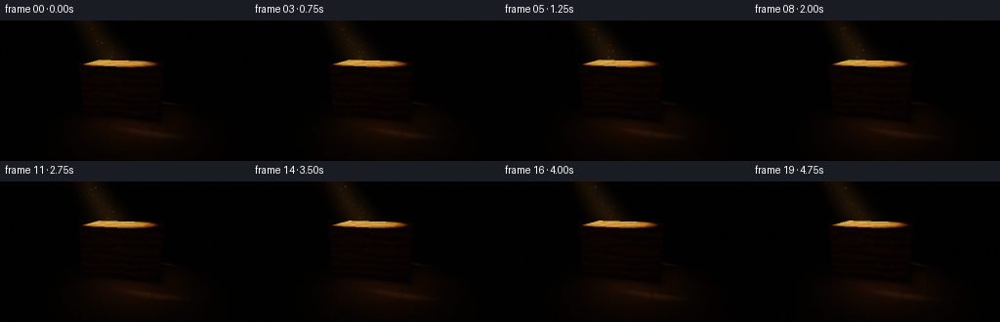
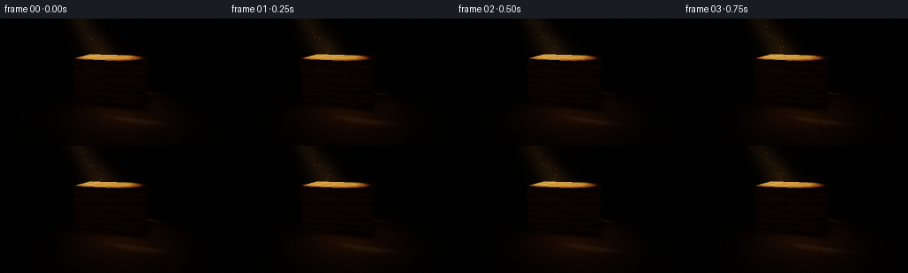
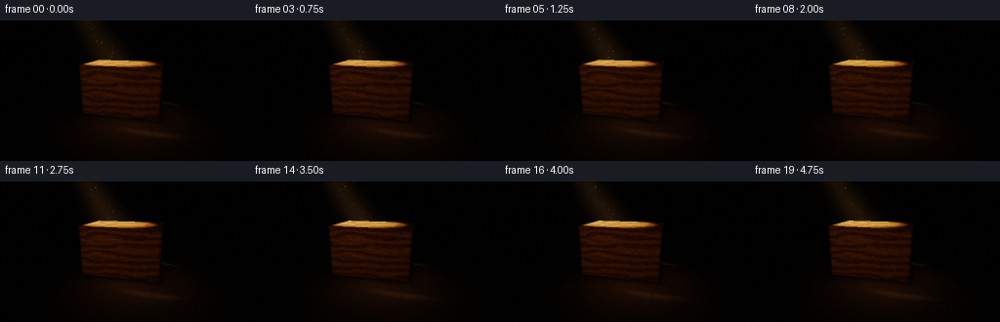
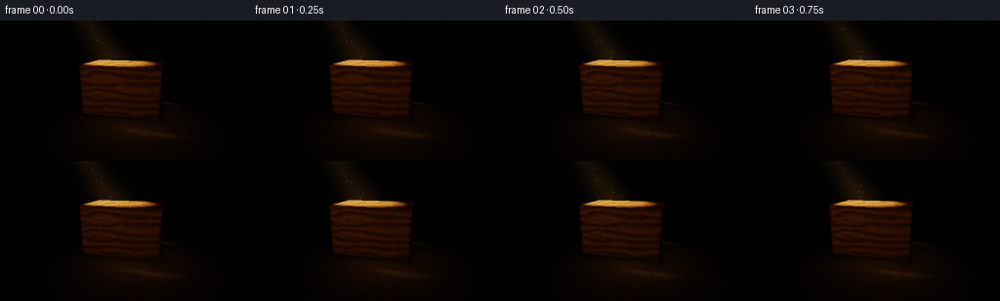

CODING AGENTS AS PIXEL WORLD MODELS
traex/DeepSeek-V4.1-Flash · phygen_041
点击播放 · 原生 RGB 像素
逐轮保存的候选
回放视频、检查图与代码变化。
每份候选均可单独播放。实际图片检查记录在下方工具轨迹中。
候选 01播放与检查图
点击播放 · 原生 RGB 像素


展开代码变化
--- 上一保存版本
+++ 本次保存版本
@@ -0,0 +1,397 @@
+"""Procedural RGB renderer for the wooden-block light study.
+
+The image is built from vectorized ray/box intersections, soft spot-light
+shadows, procedural walnut grain, and a small volumetric light shaft.
+"""
+
+from pathlib import Path
+
+import cv2
+import numpy as np
+
+import artifact_io
+
+
+WIDTH = 256
+HEIGHT = 144
+FRAMES = 20
+FPS = 4.0
+SS = 2
+
+CASE_DIR = Path(__file__).resolve().parent
+
+
+def normalize(v):
+ return v / np.maximum(np.linalg.norm(v, axis=-1, keepdims=True), 1e-8)
+
+
+def fract(x):
+ return x - np.floor(x)
+
+
+def hash2(x, y):
+ return fract(np.sin(x * 127.1 + y * 311.7 + 17.13) * 43758.5453123)
+
+
+def value_noise(x, y):
+ xi = np.floor(x)
+ yi = np.floor(y)
+ xf = x - xi
+ yf = y - yi
+ u = xf * xf * (3.0 - 2.0 * xf)
+ v = yf * yf * (3.0 - 2.0 * yf)
+ a = hash2(xi, yi)
+ b = hash2(xi + 1.0, yi)
+ c = hash2(xi, yi + 1.0)
+ d = hash2(xi + 1.0, yi + 1.0)
+ return (a * (1.0 - u) + b * u) * (1.0 - v) + (c * (1.0 - u) + d * u) * v
+
+
+def fbm(x, y):
+ total = np.zeros_like(x)
+ amplitude = 0.55
+ for octave in range(4):
+ total += amplitude * value_noise(x, y)
+ x = x * 2.03 + 9.17
+ y = y * 2.03 - 4.31
+ amplitude *= 0.48
+ return total
+
+
+def smoothstep(a, b, x):
+ t = np.clip((x - a) / (b - a), 0.0, 1.0)
+ return t * t * (3.0 - 2.0 * t)
+
+
+def camera_rays(camera, target, tan_v, sx, sy, frame):
+ # A slow, almost imperceptible push keeps the volumetric dust alive.
+ t = frame / (FRAMES - 1)
+ camera = camera + np.array([0.010 * np.sin(0.45 * np.pi * t), 0.004 * np.sin(np.pi * t), -0.025 * t])
+ target = target + np.array([0.006 * np.sin(0.35 * np.pi * t), 0.0, 0.0])
+
+ forward = normalize(target - camera)
+ right = normalize(np.cross(forward, np.array([0.0, 1.0, 0.0])))
+ up = np.cross(right, forward)
+ tan_h = tan_v * WIDTH / HEIGHT
+
+ px = ((np.arange(sx) + 0.5) / sx * 2.0 - 1.0) * tan_h
+ py = (1.0 - (np.arange(sy) + 0.5) / sy * 2.0) * tan_v
+ xx, yy = np.meshgrid(px, py)
+ directions = (
+ forward[None, None, :]
+ + xx[:, :, None] * right[None, None, :]
+ + yy[:, :, None] * up[None, None, :]
+ )
+ directions = normalize(directions)
+ return np.broadcast_to(camera, directions.shape).copy(), directions
+
+
+def rotate_y(vector, angle):
+ c = np.cos(angle)
+ s = np.sin(angle)
+ x = vector[..., 0] * c + vector[..., 2] * s
+ z = -vector[..., 0] * s + vector[..., 2] * c
+ return np.stack((x, vector[..., 1], z), axis=-1)
+
+
+def rotate_y_inverse(vector, angle):
+ return rotate_y(vector, -angle)
+
+
+class Block:
+ def __init__(self, center, half_size, angle):
+ self.center = np.asarray(center, dtype=np.float64)
+ self.half = np.asarray(half_size, dtype=np.float64)
+ self.angle = float(angle)
+
+ def intersect(self, origins, directions):
+ local_o = rotate_y_inverse(origins - self.center, self.angle)
+ local_d = rotate_y_inverse(directions, self.angle)
+ safe_d = np.where(np.abs(local_d) < 1e-10, 1e-10, local_d)
+ t1 = (-self.half - local_o) / safe_d
+ t2 = (self.half - local_o) / safe_d
+ t_near = np.minimum(t1, t2)
+ t_far = np.maximum(t1, t2)
+ t_enter = np.max(t_near, axis=-1)
+ t_exit = np.min(t_far, axis=-1)
+ hit = (t_enter <= t_exit) & (t_exit > 0.0)
+ distance = np.where(t_enter > 1e-6, t_enter, t_exit)
+ axis = np.argmax(t_near == t_enter[..., None], axis=-1)
+ local_p = local_o + distance[..., None] * local_d
+ local_normal = np.zeros_like(local_p)
+ for index in range(3):
+ mask = axis == index
+ local_normal[..., index] = np.where(local_p[..., index] >= 0.0, 1.0, -1.0) * mask
+ normal = normalize(rotate_y(local_normal, self.angle))
+ return hit, distance, normal, local_p
+
+
+def shade_wood(local_p, normal, block):
+ hx, hy, hz = block.half
+ abs_n = np.abs(normal)
+ is_top = abs_n[..., 1] > 0.5
+ is_front = (abs_n[..., 2] > 0.5) & (normal[..., 2] > 0.0)
+ is_side = (abs_n[..., 0] > 0.5)
+
+ # Grain runs along the long x axis. Each face gets a slightly different
+ # slice through the same procedural timber so the corners read naturally.
+ u = np.where(is_top | is_front, local_p[..., 0], local_p[..., 2])
+ v = np.where(is_top, local_p[..., 2], local_p[..., 1])
+ face_seed = np.where(is_top, 0.0, np.where(is_front, 2.7, 5.1))
+ warp = fbm(u * 2.3 + face_seed, v * 7.0)
+ rings = 0.5 + 0.5 * np.sin(v * 52.0 + warp * 9.0 + 0.7 * np.sin(u * 7.0))
+ fine = value_noise(u * 33.0 + face_seed, v * 105.0)
+ pores = smoothstep(0.74, 0.96, value_noise(u * 80.0 + 7.0, v * 31.0))
+
+ light_wood = np.array([0.49, 0.255, 0.095])
+ dark_wood = np.array([0.19, 0.072, 0.025])
+ grain_mix = np.clip(0.25 + 0.48 * rings + 0.18 * (fine - 0.5) - 0.16 * pores, 0.0, 1.0)
+ color = dark_wood + (light_wood - dark_wood) * grain_mix[..., None]
+ color *= (0.91 + 0.12 * fine[..., None])
+
+ edge_distance = np.where(
+ is_top,
+ np.minimum(hx - np.abs(local_p[..., 0]), hz - np.abs(local_p[..., 2])),
+ np.where(
+ is_front,
+ np.minimum(hx - np.abs(local_p[..., 0]), hy - np.abs(local_p[..., 1])),
+ np.minimum(hz - np.abs(local_p[..., 2]), hy - np.abs(local_p[..., 1])),
+ ),
+ )
+ bevel = 1.0 - smoothstep(0.008, 0.035, edge_distance)
+ color *= (1.0 - 0.23 * bevel[..., None])
+ color += np.array([0.10, 0.055, 0.022]) * (bevel * (is_top | (is_side & (normal[..., 0] < 0.0))))[..., None]
+ return np.clip(color, 0.0, 1.0)
+
+
+def shade_floor(points):
+ x = points[..., 0]
+ z = points[..., 2]
+ plank = np.floor((x + 3.0) / 0.62)
+ offset_z = z + hash2(plank, np.zeros_like(plank)) * 1.7
+ grain = 0.5 + 0.5 * np.sin(offset_z * 16.0 + fbm(x * 2.0, z * 5.0) * 7.0)
+ pores = smoothstep(0.78, 0.97, value_noise(x * 45.0, z * 19.0))
+ seam = smoothstep(0.014, 0.035, np.abs(fract((x + 3.0) / 0.62) - 0.5) * 0.62)
+ color = np.array([0.035, 0.030, 0.026])
+ color = color[None, None, :] * (0.76 + 0.34 * grain[..., None] - 0.10 * pores[..., None])
+ color *= (0.72 + 0.28 * seam[..., None])
+ return np.clip(color, 0.0, 1.0)
+
+
+def shade_wall(points):
+ x = points[..., 0]
+ y = points[..., 1]
+ plaster = fbm(x * 3.1 + 12.0, y * 4.7)
+ color = np.array([0.026, 0.026, 0.025])
+ return np.clip(color[None, None, :] * (0.70 + 0.45 * plaster[..., None]), 0.0, 1.0)
+
+
+def soft_shadow(points, normals, block, light_position, samples):
+ visibility = np.zeros(points.shape[:-1], dtype=np.float64)
+ basis_a = normalize(np.cross(np.array([0.0, 1.0, 0.0]), light_position - np.array([0.0, 0.0, 0.0])))
+ basis_b = normalize(np.cross(light_position, basis_a))
+ radius = 0.13
+ for offset in samples:
+ source = light_position + radius * (offset[0] * basis_a + offset[1] * basis_b)
+ direction = normalize(source - points)
+ origins = points + normals * 0.004
+ hit, _, _, _ = block.intersect(origins, direction)
+ visibility += (~hit).astype(np.float64)
+ return visibility / len(samples)
+
+
+def spot_light(points, normals, block, light_position, light_axis, shadow_samples):
+ to_light = light_position - points
+ distance2 = np.sum(to_light * to_light, axis=-1)
+ light_direction = normalize(to_light)
+ n_dot_l = np.clip(np.sum(normals * light_direction, axis=-1), 0.0, 1.0)
+
+ from_light = normalize(points - light_position)
+ angle_cos = np.sum(from_light * light_axis, axis=-1)
+ cone = smoothstep(0.9905, 0.9975, angle_cos)
+ falloff = 8.4 / (1.0 + 0.105 * distance2)
+ visibility = soft_shadow(points, normals, block, light_position, shadow_samples)
+ return (n_dot_l * cone * falloff * visibility)[..., None]
+
+
+def ray_plane(origins, directions, axis, value):
+ component = directions[..., axis]
+ safe = np.where(np.abs(component) < 1e-9, 1e-9, component)
+ distance = (value - origins[..., axis]) / safe
+ hit = distance > 0.0
+ points = origins + distance[..., None] * directions
+ normal = np.zeros_like(directions)
+ normal[..., axis] = -np.sign(component)
+ return hit, distance, points, normal
+
+
+def beam_volume(origins, directions, depth, light_position, light_axis, frame):
+ samples = 42
+ t = frame / (FRAMES - 1)
+ accumulation = np.zeros(depth.shape, dtype=np.float64)
+ rng = np.random.default_rng(9041)
+ jitter = rng.random(depth.shape)
+ near = 0.08
+ far = np.clip(depth - 0.015, near, 7.0)
+ tangent = np.tan(0.079)
+ for index in range(samples):
+ fraction = (index + jitter) / samples
+ distance = near + (far - near) * fraction
+ points = origins + distance[..., None] * directions
+ relative = points - light_position
+ along = np.sum(relative * light_axis, axis=-1)
+ radial_vector = relative - along[..., None] * light_axis
+ radial = np.linalg.norm(radial_vector, axis=-1)
+ radius = 0.045 + np.maximum(along, 0.0) * tangent
+ core = np.exp(-((radial / np.maximum(radius, 0.03)) ** 2) * 1.55)
+ longitudinal = smoothstep(-0.15, 0.35, along) * (1.0 - smoothstep(4.7, 5.25, along))
+ wisps = 0.82 + 0.18 * value_noise(points[..., 0] * 2.4 + 2.0 * t, points[..., 1] * 3.1 - 1.3 * t)
+ accumulation += core * longitudinal * wisps / np.sqrt(1.0 + 0.08 * distance * distance)
+ accumulation *= (far - near) / samples
+ warm = np.array([0.95, 0.69, 0.38])
+ return accumulation[..., None] * warm[None, None, :] * 0.092
+
+
+def add_dust(image, depth, camera, target, tan_v, frame):
+ height, width = image.shape[:2]
+ forward = normalize(target - camera)
+ right = normalize(np.cross(forward, np.array([0.0, 1.0, 0.0])))
+ up = np.cross(right, forward)
+ tan_h = tan_v * WIDTH / HEIGHT
+ t = frame / (FRAMES - 1)
+ rng = np.random.default_rng(1289)
+ count = 42
+ along = rng.uniform(0.8, 4.6, count)
+ theta = rng.uniform(0.0, 2.0 * np.pi, count)
+ radial = np.sqrt(rng.uniform(0.0, 1.0, count)) * (0.045 + along * 0.075) * 0.78
+ phase = rng.uniform(0.0, 2.0 * np.pi, count)
+ light_position = np.array([-2.55, 4.15, -1.75])
+ light_axis = normalize(np.array([0.08, 0.43, -0.10]) - light_position)
+ centerline = light_position + along[:, None] * light_axis[None, :]
+ basis_a = normalize(np.cross(light_axis, np.array([0.0, 1.0, 0.0])))
+ basis_b = np.cross(light_axis, basis_a)
+ angle = theta + 0.16 * np.sin(2.0 * np.pi * t + phase)
+ positions = centerline + radial[:, None] * (np.cos(angle)[:, None] * basis_a + np.sin(angle)[:, None] * basis_b)
+ positions[:, 1] += 0.018 * np.sin(2.0 * np.pi * t + phase)
+
+ relative = positions - camera
+ z = relative @ forward
+ x = relative @ right
+ y = relative @ up
+ sx = ((x / z) / tan_h * 0.5 + 0.5) * width
+ sy = (0.5 - (y / z) / tan_v * 0.5) * height
+ valid = (z > 0.2) & np.isfinite(sx) & np.isfinite(sy)
+ for index in range(count):
+ if not valid[index]:
+ continue
+ px = int(round(sx[index]))
+ py = int(round(sy[index]))
+ if px < 3 or py < 3 or px >= width - 3 or py >= height - 3:
+ continue
+ if z[index] > depth[py, px] + 0.06:
+ continue
+ brightness = (0.25 + 0.75 * rng.random()) * (0.65 + 0.35 * np.sin(2.0 * np.pi * (t * 0.7 + rng.random())))
+ sigma = 0.65 + rng.random() * 0.55
+ radius = 3
+ yy, xx = np.mgrid[-radius:radius + 1, -radius:radius + 1]
+ glow = np.exp(-(xx * xx + yy * yy) / (2.0 * sigma * sigma)) * brightness
+ glow = glow[..., None] * np.array([1.0, 0.78, 0.48])[None, None, :]
+ image[py - radius:py + radius + 1, px - radius:px + radius + 1] += glow * 0.13
+ return image
+
+
+def render_frame(frame):
+ sx, sy = WIDTH * SS, HEIGHT * SS
+ camera = np.array([0.13, 1.36, 3.18])
+ target = np.array([0.02, 0.38, -0.16])
+ tan_v = 0.50
+ origins, directions = camera_rays(camera, target, tan_v, sx, sy, frame)
+
+ block = Block(center=(0.02, 0.39, -0.18), half_size=(0.61, 0.39, 0.39), angle=-0.20)
+ hit_block, t_block, n_block, local_block = block.intersect(origins, directions)
+
+ hit_floor, t_floor, p_floor, n_floor = ray_plane(origins, directions, 1, 0.0)
+ hit_wall, t_wall, p_wall, n_wall = ray_plane(origins, directions, 2, -3.0)
+
+ t_floor = np.where(hit_floor, t_floor, np.inf)
+ t_wall = np.where(hit_wall, t_wall, np.inf)
+ t_block = np.where(hit_block, t_block, np.inf)
+ depth = np.minimum(np.minimum(t_floor, t_wall), t_block)
+
+ surface_floor = (depth == t_floor)
+ surface_wall = (depth == t_wall) & ~surface_floor
+ surface_block = (depth == t_block) & ~surface_floor & ~surface_wall
+
+ points = origins + depth[..., None] * directions
+ normals = np.where(
+ surface_block[..., None],
+ n_block,
+ np.where(surface_floor[..., None], n_floor, n_wall),
+ )
+ albedo = np.where(surface_block[..., None], shade_wood(local_block, n_block, block),
+ np.where(surface_floor[..., None], shade_floor(points), shade_wall(points)))
+
+ light_position = np.array([-2.55, 4.15, -1.75])
+ light_axis = normalize(np.array([0.08, 0.43, -0.10]) - light_position)
+ samples = np.array([
+ [-1.0, -1.0], [1.0, -1.0], [-1.0, 1.0], [1.0, 1.0], [0.0, 0.0],
+ ])
+ direct = spot_light(points, normals, block, light_position, light_axis, samples)
+
+ ambient = 0.020 + 0.014 * np.clip(normals[..., 1], 0.0, 1.0)
+ hdr = albedo * (direct + ambient[..., None])
+
+ # A small cool rim separates the near edge from the dark background.
+ rim = np.power(1.0 - np.clip(np.sum(normals * -directions, axis=-1), 0.0, 1.0), 3.0)
+ hdr += albedo * rim[..., None] * np.array([0.10, 0.12, 0.14]) * surface_block[..., None] * 0.36
+
+ volume = beam_volume(origins, directions, depth, light_position, light_axis, frame)
+ hdr += volume
+
+ # A faint pool of bounced warmth below the block makes the contact shadow legible.
+ floor_glow = np.exp(-np.sum((points[..., [0, 2]] - np.array([0.18, 0.30])) ** 2, axis=-1) / 0.75)
+ hdr += np.array([0.040, 0.023, 0.012]) * (floor_glow * surface_floor)[..., None]
+
+ # Contact occlusion around the block footprint.
+ local_xz = rotate_y_inverse(points - block.center, block.angle)[..., [0, 2]]
+ outside = np.maximum(np.abs(local_xz) - block.half[[0, 2]], 0.0)
+ outside_distance = np.linalg.norm(outside, axis=-1)
+ contact = np.exp(-outside_distance / 0.105)
+ hdr *= (1.0 - 0.64 * contact * surface_floor)[..., None]
+
+ hdr = add_dust(hdr, depth, camera, target, tan_v, frame)
+
+ # Filmic curve and restrained warm/cool grade.
+ hdr *= 1.34
+ mapped = (hdr * (2.51 * hdr + 0.03)) / (hdr * (2.43 * hdr + 0.59) + 0.14)
+ mapped = np.clip(mapped, 0.0, 1.0)
+ luminance = np.sum(mapped * np.array([0.2126, 0.7152, 0.0722]), axis=-1, keepdims=True)
+ mapped = luminance + (mapped - luminance) * 1.08
+ mapped += np.array([0.007, 0.003, -0.003]) * mapped * (1.0 - mapped)
+
+ yy, xx = np.mgrid[0:sy, 0:sx]
+ nx = (xx + 0.5) / sx * 2.0 - 1.0
+ ny = (yy + 0.5) / sy * 2.0 - 1.0
+ vignette = np.clip(1.0 - 0.22 * (nx * nx * 0.62 + ny * ny * 0.42), 0.0, 1.0)
+ mapped *= vignette[..., None]
+
+ # Bloom preserves the bright shaft and gives the block edges a photographic falloff.
+ bright = np.maximum(mapped - 0.72, 0.0)
+ bloom = cv2.GaussianBlur(bright, (0, 0), sigmaX=7.0 * SS, sigmaY=7.0 * SS)
+ mapped = 1.0 - (1.0 - mapped) * (1.0 - np.clip(bloom * 0.33, 0.0, 0.45))
+
+ rng = np.random.default_rng(2200 + frame)
+ grain = rng.normal(0.0, 0.006, (sy, sx, 1))
+ mapped = np.clip(mapped + grain, 0.0, 1.0)
+ small = cv2.resize(mapped, (WIDTH, HEIGHT), interpolation=cv2.INTER_AREA)
+ return np.clip(np.round(small * 255.0), 0, 255).astype(np.uint8)
+
+
+def main():
+ frames = np.stack([render_frame(index) for index in range(FRAMES)])
+ artifact_io.save(frames, CASE_DIR)
+ print(f"saved {len(frames)} frames to {CASE_DIR}")
+
+
+if __name__ == "__main__":
+ main()
候选 02播放与检查图
点击播放 · 原生 RGB 像素


展开代码变化
--- 上一保存版本
+++ 本次保存版本
@@ -172,8 +172,8 @@
grain = 0.5 + 0.5 * np.sin(offset_z * 16.0 + fbm(x * 2.0, z * 5.0) * 7.0)
pores = smoothstep(0.78, 0.97, value_noise(x * 45.0, z * 19.0))
seam = smoothstep(0.014, 0.035, np.abs(fract((x + 3.0) / 0.62) - 0.5) * 0.62)
- color = np.array([0.035, 0.030, 0.026])
- color = color[None, None, :] * (0.76 + 0.34 * grain[..., None] - 0.10 * pores[..., None])
+ color = np.array([0.068, 0.052, 0.038])
+ color = color[None, None, :] * (0.78 + 0.32 * grain[..., None] - 0.10 * pores[..., None])
color *= (0.72 + 0.28 * seam[..., None])
return np.clip(color, 0.0, 1.0)
@@ -182,7 +182,7 @@
x = points[..., 0]
y = points[..., 1]
plaster = fbm(x * 3.1 + 12.0, y * 4.7)
- color = np.array([0.026, 0.026, 0.025])
+ color = np.array([0.043, 0.041, 0.037])
return np.clip(color[None, None, :] * (0.70 + 0.45 * plaster[..., None]), 0.0, 1.0)
@@ -249,7 +249,7 @@
accumulation += core * longitudinal * wisps / np.sqrt(1.0 + 0.08 * distance * distance)
accumulation *= (far - near) / samples
warm = np.array([0.95, 0.69, 0.38])
- return accumulation[..., None] * warm[None, None, :] * 0.092
+ return accumulation[..., None] * warm[None, None, :] * 0.170
def add_dust(image, depth, camera, target, tan_v, frame):
@@ -302,8 +302,8 @@
def render_frame(frame):
sx, sy = WIDTH * SS, HEIGHT * SS
- camera = np.array([0.13, 1.36, 3.18])
- target = np.array([0.02, 0.38, -0.16])
+ camera = np.array([0.13, 1.48, 3.32])
+ target = np.array([0.02, 0.30, -0.16])
tan_v = 0.50
origins, directions = camera_rays(camera, target, tan_v, sx, sy, frame)
@@ -338,7 +338,7 @@
])
direct = spot_light(points, normals, block, light_position, light_axis, samples)
- ambient = 0.020 + 0.014 * np.clip(normals[..., 1], 0.0, 1.0)
+ ambient = 0.030 + 0.022 * np.clip(normals[..., 1], 0.0, 1.0)
hdr = albedo * (direct + ambient[..., None])
# A small cool rim separates the near edge from the dark background.
@@ -350,7 +350,7 @@
# A faint pool of bounced warmth below the block makes the contact shadow legible.
floor_glow = np.exp(-np.sum((points[..., [0, 2]] - np.array([0.18, 0.30])) ** 2, axis=-1) / 0.75)
- hdr += np.array([0.040, 0.023, 0.012]) * (floor_glow * surface_floor)[..., None]
+ hdr += np.array([0.068, 0.039, 0.019]) * (floor_glow * surface_floor)[..., None]
# Contact occlusion around the block footprint.
local_xz = rotate_y_inverse(points - block.center, block.angle)[..., [0, 2]]
@@ -362,7 +362,7 @@
hdr = add_dust(hdr, depth, camera, target, tan_v, frame)
# Filmic curve and restrained warm/cool grade.
- hdr *= 1.34
+ hdr *= 1.43
mapped = (hdr * (2.51 * hdr + 0.03)) / (hdr * (2.43 * hdr + 0.59) + 0.14)
mapped = np.clip(mapped, 0.0, 1.0)
luminance = np.sum(mapped * np.array([0.2126, 0.7152, 0.0722]), axis=-1, keepdims=True)
候选 03播放与检查图
点击播放 · 原生 RGB 像素


展开代码变化
--- 上一保存版本
+++ 本次保存版本
@@ -19,6 +19,11 @@
SS = 2
CASE_DIR = Path(__file__).resolve().parent
+LIGHT_POSITION = np.array([-2.55, 4.15, -1.75])
+LIGHT_TARGET = np.array([0.08, 0.36, -0.18])
+LIGHT_AXIS = LIGHT_TARGET - LIGHT_POSITION
+LIGHT_AXIS /= np.linalg.norm(LIGHT_AXIS)
+FILL_POSITION = np.array([-1.10, 1.65, 2.75])
def normalize(v):
@@ -212,6 +217,14 @@
falloff = 8.4 / (1.0 + 0.105 * distance2)
visibility = soft_shadow(points, normals, block, light_position, shadow_samples)
return (n_dot_l * cone * falloff * visibility)[..., None]
+
+
+def fill_light(points, normals):
+ to_light = FILL_POSITION - points
+ distance2 = np.sum(to_light * to_light, axis=-1)
+ light_direction = normalize(to_light)
+ n_dot_l = np.clip(np.sum(normals * light_direction, axis=-1), 0.0, 1.0)
+ return (0.18 * n_dot_l / (1.0 + 0.20 * distance2))[..., None]
def ray_plane(origins, directions, axis, value):
@@ -265,8 +278,8 @@
theta = rng.uniform(0.0, 2.0 * np.pi, count)
radial = np.sqrt(rng.uniform(0.0, 1.0, count)) * (0.045 + along * 0.075) * 0.78
phase = rng.uniform(0.0, 2.0 * np.pi, count)
- light_position = np.array([-2.55, 4.15, -1.75])
- light_axis = normalize(np.array([0.08, 0.43, -0.10]) - light_position)
+ light_position = LIGHT_POSITION
+ light_axis = LIGHT_AXIS
centerline = light_position + along[:, None] * light_axis[None, :]
basis_a = normalize(np.cross(light_axis, np.array([0.0, 1.0, 0.0])))
basis_b = np.cross(light_axis, basis_a)
@@ -302,9 +315,9 @@
def render_frame(frame):
sx, sy = WIDTH * SS, HEIGHT * SS
- camera = np.array([0.13, 1.48, 3.32])
- target = np.array([0.02, 0.30, -0.16])
- tan_v = 0.50
+ camera = np.array([0.15, 1.12, 2.56])
+ target = np.array([0.02, 0.32, -0.16])
+ tan_v = 0.42
origins, directions = camera_rays(camera, target, tan_v, sx, sy, frame)
block = Block(center=(0.02, 0.39, -0.18), half_size=(0.61, 0.39, 0.39), angle=-0.20)
@@ -331,12 +344,13 @@
albedo = np.where(surface_block[..., None], shade_wood(local_block, n_block, block),
np.where(surface_floor[..., None], shade_floor(points), shade_wall(points)))
- light_position = np.array([-2.55, 4.15, -1.75])
- light_axis = normalize(np.array([0.08, 0.43, -0.10]) - light_position)
+ light_position = LIGHT_POSITION
+ light_axis = LIGHT_AXIS
samples = np.array([
[-1.0, -1.0], [1.0, -1.0], [-1.0, 1.0], [1.0, 1.0], [0.0, 0.0],
])
direct = spot_light(points, normals, block, light_position, light_axis, samples)
+ direct += fill_light(points, normals) * surface_block[..., None]
ambient = 0.030 + 0.022 * np.clip(normals[..., 1], 0.0, 1.0)
hdr = albedo * (direct + ambient[..., None])
候选 04播放与检查图
点击播放 · 原生 RGB 像素


展开代码变化
--- 上一保存版本
+++ 本次保存版本
@@ -224,7 +224,7 @@
distance2 = np.sum(to_light * to_light, axis=-1)
light_direction = normalize(to_light)
n_dot_l = np.clip(np.sum(normals * light_direction, axis=-1), 0.0, 1.0)
- return (0.18 * n_dot_l / (1.0 + 0.20 * distance2))[..., None]
+ return (0.62 * n_dot_l / (1.0 + 0.20 * distance2))[..., None]
def ray_plane(origins, directions, axis, value):
可观测工具轨迹
实际执行的命令与返回图片。
命令 1exit 0
/bin/bash -c "sed -n '1,240p' prompt.txt"
命令 2exit 0
/bin/bash -c "sed -n '1,280p' GENERATION_RULES.md"
命令 3exit 0
/bin/bash -c 'cat task_spec.json'
命令 4exit 0
/bin/bash -c "find . -maxdepth 2 -type f -printf '%p\\n' | sort | sed -n '1,240p'"
命令 5exit 0
/bin/bash -c "sed -n '1,320p' artifact_io.py"
命令 6exit 0
/bin/bash -c "sed -n '1,320p' player_template.html"
命令 7exit 0
/bin/bash -c "python - <<'PY' import importlib.util for m in ['numpy','PIL','imageio','cv2','matplotlib']: print(m, bool(importlib.util.find_spec(m))) PY"
命令 8exit 0
/bin/bash -c 'git status --short'
命令 9exit 1
/bin/bash -c 'python generate.py'
命令 10exit 1
/bin/bash -c 'python generate.py'
命令 11exit 1
/bin/bash -c 'python generate.py'
命令 12exit 0
/bin/bash -c 'python generate.py'
命令 13exit 0
/bin/bash -c "find . -maxdepth 2 -type f -printf '%p %s bytes\\n' | sort | sed -n '1,120p'"
命令 14exit 0
/bin/bash -c "python - <<'PY'
from PIL import Image
import numpy as np
from pathlib import Path
frames=[]
for p in sorted(Path('frames').glob('*.png')):
a=np.asarray(Image.open(p))
frames.append(a)
print(p.name, a.shape, 'min', a.min(), 'max', a.max(), 'mean', round(float(a.mean()),2), 'clipped', round(float((a==255).mean()),5))
f=np.stack(frames)
d=np.abs(np.diff(f.astype(np.int16),axis=0))
print('temporal mean abs diff',d.mean(),'max',d.max(),'changed pixels/frame', (d.max(axis=-1)>0).mean())
print('channel means',f.mean(axis=(0,1,2)))
PY"命令 15exit 0
/bin/bash -c "python - <<'PY'
from PIL import Image, ImageEnhance
import numpy as np
im=Image.open('frames/00.png').convert('RGB')
# gamma-lift for a diagnostic, not output
a=np.asarray(im).astype(float)/255
lum=np.maximum(a.max(2), a.mean(2)*1.15)
lum=lum**0.42
# block-average to 64x36
h,w=lum.shape
lum=np.asarray(Image.fromarray((lum*255).astype('uint8')).resize((64,36),Image.Resampling.BOX))/255
chars=' .:-=+*#%@'
for row in lum:
print(''.join(chars[min(len(chars)-1,int(v*(len(chars)-1)+0.5))] for v in row))
PY"命令 16exit 0
/bin/bash -c "python - <<'PY'
from PIL import Image
import numpy as np
a=np.asarray(Image.open('frames/00.png')).astype(float)
lum=a.mean(2)
for t in [2,5,10,20,40,80,120]:
ys,xs=np.where(lum>t)
print(t, len(xs), (xs.min(),xs.max(),ys.min(),ys.max()) if len(xs) else None)
# row/col energy
for y in range(0,144,8): print(f'{y:3d}',f'{lum[y:y+8].mean():6.2f}',f'{lum[y:y+8].max():5.0f}')
PY"命令 17exit 0
/bin/bash -c 'python generate.py'
命令 18exit 0
/bin/bash -c "python - <<'PY'
from PIL import Image
import numpy as np
from pathlib import Path
f=np.stack([np.asarray(Image.open(p)) for p in sorted(Path('frames').glob('*.png'))])
lum=f.mean(3)
print('shape/dtype',f.shape,f.dtype,'mean RGB',np.round(f.mean((0,1,2)),3),'max',f.max(),'clipped',(f==255).mean())
for t in [2,5,10,20,40,80,120]:
ys,xs=np.where(lum[0]>t); print('threshold',t,'pixels',len(xs),'bbox',(xs.min(),xs.max(),ys.min(),ys.max()) if len(xs) else None)
d=np.abs(np.diff(f.astype(np.int16),axis=0))
print('temporal mean abs diff',round(float(d.mean()),4),'max',d.max(),'changed px fraction',round(float((d.max(-1)>0).mean()),4))
print('per-frame mean',np.round(lum.mean((1,2)),3).tolist())
PY"命令 19exit 0
/bin/bash -c "python - <<'PY'
from PIL import Image
import numpy as np
a=np.asarray(Image.open('frames/00.png')).astype(float)
# print colors at block and floor grid
for y in [20,40,50,55,60,70,85,95,105,120,135]:
vals=[]
for x in [30,60,90,110,128,150,180,210,235]: vals.append('%3d'%int(a[y,x].mean()))
print('%3d'%y,' '.join(vals))
PY"命令 20exit 0
/bin/bash -c "python - <<'PY'
from PIL import Image
import numpy as np
a=np.asarray(Image.open('frames/00.png')).astype(float).mean(2)
for y in range(45,110,4):
s=''
for x in range(60,200,4):
v=a[y:y+4,x:x+4].mean(); s += ' .:-=+*#%@'[min(9,int((v/140)**0.55*10))]
print(f'{y:3d} {s}')
PY"命令 21exit 0
/bin/bash -c "python - <<'PY'
from PIL import Image
import numpy as np
for n in [0,5,10,19]:
a=np.asarray(Image.open(f'frames/{n:02}.png'))
print(n)
# bounding box of values above 8 excluding subtle grain, and center row values
lum=a.mean(2)
for t in [3,5,8,15,30]: print(t, int((lum>t).sum()))
print('sample center',a[52,120],a[95,140],a[110,140])
PY"命令 22exit 0
/bin/bash -c "python - <<'PY'
import numpy as np
from PIL import Image
# contact sheet is already generated; make diagnostic negative/inverted preview to inspect shadows
im=Image.open('inspection.png')
a=np.asarray(im)
# Crop the first frame only; apply display gamma
f=np.asarray(Image.open('frames/00.png')).astype(np.float32)/255
v=np.clip(f**(1/2.2),0,1)
Image.fromarray((v*255).astype('uint8')).save('.tmp/frame00_display.png')
print('.tmp/frame00_display.png')
PY"命令 23exit 0
/bin/bash -c 'rg -n "light_position|light_axis|camera =|target =|tan_v" generate.py'
命令 24exit 0
/bin/bash -c "sed -n '1,50p' generate.py"
命令 25exit 0
/bin/bash -c 'python generate.py'
命令 26exit 0
/bin/bash -c "python - <<'PY'
from PIL import Image
import numpy as np
from pathlib import Path
paths=sorted(Path('frames').glob('*.png'))
f=np.stack([np.asarray(Image.open(p)) for p in paths])
lum=f.mean(3)
print('frames',len(paths),'shape',f.shape,'dtype',f.dtype)
print('RGB mean',np.round(f.mean((0,1,2)),2),'max',f.max(),'clipped',float((f==255).mean()))
for t in [3,5,8,15,30,80,120]:
ys,xs=np.where(lum[0]>t); print('lum>',t,'count',len(xs),'bbox',(int(xs.min()),int(xs.max()),int(ys.min()),int(ys.max())) if len(xs) else None)
d=np.abs(np.diff(f.astype(np.int16),axis=0))
print('temporal mean abs diff',round(float(d.mean()),4),'max',int(d.max()),'changed fraction',round(float((d.max(-1)>0).mean()),4))
print('frame means',np.round(lum.mean((1,2)),2).tolist())
# front face and floor sample ranges
for name,(x0,x1,y0,y1) in {'block':(85,170,35,100),'floor_shadow':(95,195,90,135)}.items():
a=f[0,y0:y1,x0:x1]; print(name,'mean',np.round(a.mean((0,1)),1),'p95',np.percentile(a,95))
PY"命令 27exit 0
/bin/bash -c "python - <<'PY'
from PIL import Image
import numpy as np
a=np.asarray(Image.open('frames/00.png')).astype(float).mean(2)
for y in range(16,132,4):
s=''
for x in range(44,220,4):
v=a[y:y+4,x:x+4].mean(); s += ' .:-=+*#%@'[min(9,int((v/120)**0.55*10))]
print(f'{y:3d} {s}')
PY"命令 28exit 0
/bin/bash -c 'python generate.py'
命令 29exit 0
/bin/bash -c "python - <<'PY'
from PIL import Image
import numpy as np
from pathlib import Path
paths=sorted(Path('frames').glob('*.png'))
f=np.stack([np.asarray(Image.open(p)) for p in paths])
assert f.shape==(20,144,256,3) and f.dtype==np.uint8
lum=f.mean(3)
d=np.abs(np.diff(f.astype(np.int16),axis=0))
print('RGB mean',np.round(f.mean((0,1,2)),2),'max',f.max(),'clipped',float((f==255).mean()))
print('front face mean',np.round(f[0,48:84,90:160].mean((0,1)),1),'p95',np.percentile(f[0,48:84,90:160],95))
print('floor shadow mean',np.round(f[0,104:132,100:195].mean((0,1)),1),'p95',np.percentile(f[0,104:132,100:195],95))
print('temporal mean abs diff',round(float(d.mean()),4),'changed fraction',round(float((d.max(-1)>0).mean()),4))
print('frame means',np.round(lum.mean((1,2)),2).tolist())
PY"保存候选 4 份；完成命令 29 次；可验证图片返回 0 张。原始 API 响应与完整日志保留在本地。